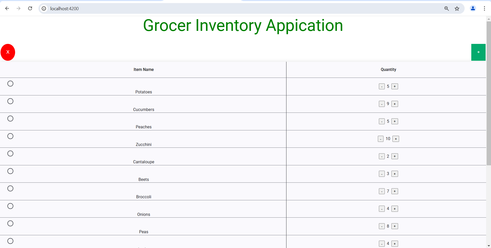

Professional Assessment
The journey of obtaining my undergraduate
began in the fall of 2022. This began as a way to develop a new skill set in an
area that truly interested me. What ultimately ended up happening was that I developed
a multitude of other skills. Professionalism is my ability to communicate and
articulate an idea or question. Perseverance in the face of adversity while
remaining humble and able to ask for help. Most importantly improved skills in
analytical problem solving. Every day was a new challenge and being able to
identify and approach them in a concise systematic manner allowed me to achieve
everything thus far.
Having spent almost ten years already repairing and
troubleshooting cutting edge aeronautics systems. I was able to utilize an
already existing skillset in working through problems faced in the field of computer
science. Electromechanical systems are comprised of many pieces working
together to achieve a common goal. Such is the same with software, being able
to first identify said goal, working backwards to identify key components has
helped to analyze function and option I received exposure to in all coursework.
This seems to have benefited myself most in approaching problems related to
software design and engineering.
Data Structures and algorithms rely on using a sort of recipe
to achieve a consistent outcome. Utilizing everything I have learned in this
area has given me a new toolset in my professional life. Identifying the
cyclical nature of things presents a way of solving problems or working to
achieve a more efficient manner of something.
Becoming more cognizant of security and application
integrity has moved to the forefront of my design mindset. I have learned that
security isn t simply user authentication and encryption. The holistic design
of a program and the way everything interfaces is just as paramount. Poorly
integrated systems can lead to breaches of sensitive information which can be completely
detrimental to the end user as well as the owner.
Artifact One
Artifact one,
which is to demonstrate proficiency in the area of software engineering and
design. Previously I had created a basic inventory management application in
C++. What was originally a simple
command line application with the ability to parse a local text file containing
various items. Then present the number of unique items to the user. The user
had the ability to see all quantities available, all quantities as a histograms
as well as search for an individual item..
The
enhancement planned for implementation is to rewrite it with JavaScript and
HTML, utilizing node.js and express frameworks with an angular frontend. This
evolved what was a basic console application into a full stack MEAN
application. While also increasing efficiency of the parsing datasets for
future, larger inventories.
Thinking
in terms of real world use of this application. By designing it into a client/
server system would allow for real time use by multiple users in a single
environment. It is not uncommon for entities to require the ability to access
information contained in a centralized system via a client server set up.
Artifact Two
Artifact
Two focuses on the implementation of algorithms and data structures to solve a
problem. To do this I decided to implement the A* pathing algorithm into
a python based maze generator created previously. The algorithm is a graph
traversal system similar in design to Djikstra s
Algorithm created to find the shortest distance between two points.
Algorithms are needed and utilized to solve complex
problems, especially when fixed characteristics have changing inputs. It seemed
to be a good fit to implement this pathing algorithm to solve a maze in the
most efficient manner possible. This added feature also provided a second
benefit as it allowed the program to identify whether or not the maze was solvable.
Which initially it could not do as it generated obstacles from random numbers.
By successfully implementing this pathing algorithm the program was able to guarantee
a maze with a possible solution, on top of identifying the most efficient
route.
Overall development was straightforward. Notable
difficulties arose when constructing an object to represent each node in the path
system. Once established designing the algorithm and identifying a proper heuristic
function came with ease.
Artifact Three
Artifact three requires an enhancement in regards to a database system. Building upon the first enhancement plan, a database has been implemented into the inventory management system using MongoDB. Utilizing the express framework on the server side and mongoose to interface with the database. Essential functionality for the user has been created, allowing for new items to be added to the database. Existing item quantities can be modified and items may be wholly deleted from the system. This has greatly improve scalability of the overall system. Allowing for larger datasets to be parsed in a much more efficient manner.
Being that these two artifact One an Three comprise a MEAN stack application a database is essential. While the dataset at the moment is small this will allow for it to grow exponentially large while maintaining efficiency and usability in the system.
Wanting to remain in the same vein as the original application. I implemented an improved version of the data parser so that the information contained in the original text file could be directly added to the MongoDB cluster. Probably the most difficult part aside from ensuring all the appropriate network connections were established to initiate all appropriate CRUD operations.
